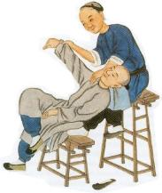

History of Tuina
A Brief History of Tuina
It it thought that animals used massage long before humans. Done out of instinct,
animals use massage for the purposes of grooming, comforting, and even healing.
As human culture and society developed, they too massaged themselves and others.
These actions were for the purposes of grooming, nourishing, and healing. Initially,
human massage was thought to be instinctual as well. We are all familiar with the
concept of immediately rubbing an area on our own bodies after it gets hit.
Massage techniques were refined and systematized over the ages. Tuina is the
culmination of the Chinese expression of that massage instinct.
animals use massage for the purposes of grooming, comforting, and even healing.
As human culture and society developed, they too massaged themselves and others.
These actions were for the purposes of grooming, nourishing, and healing. Initially,
human massage was thought to be instinctual as well. We are all familiar with the
concept of immediately rubbing an area on our own bodies after it gets hit.
Massage techniques were refined and systematized over the ages. Tuina is the
culmination of the Chinese expression of that massage instinct.

Chinese calligraphy (hanzi) for:
tui
literally means push
tui
literally means push
Chinese calligraphy (hanzi) for:
na
literally means grasp
na
literally means grasp

Highlights of Tuina's History Through Time
 | Writing on bone fragments from the Shang Dynasty (pre-1800 BCE) describe | |
| massage methods for treating infants. |
| Tuina was listed as a major treatment method in the Huangdi Neijing | |
| (approximately 250 BCE). The Huandi Neijing is one of the oldest Chinese medical texts and serves as a major theoretical foundation for Chinese medicine. |
| In the Wei and Jin Dynasties (220 - 420 CE), departments of Tuina were official | |
| specialties in the government health care system. |
| In the Sui Dynasty (581 - 618 CE), the title of Doctor of Tuina was formed. |
| By the Tang Dynasty (618 CE), Tuina was a major subject at the Imperial Medical | |
| College. |
| In 1956, the Academy of Traditional Chinese Massage (Tuina) was formed under | |
| the direction of the Minister of Public Health in China. |
Tuina doctors receive the same demanding training as acupuncturists and
herbalists and enjoy the same level of professional respect.
herbalists and enjoy the same level of professional respect.